1 Overview
This document benchmarks the tinypng() function from the tinyimg package
across different optimization levels (0-6). We test with three types of plots:
- A scatterplot based on the penguins dataset
- A simple boxplot (simpler graphics)
- A complex 3D perspective plot (more complex graphics)
For each optimization level, we measure:
- File size reduction (in KB and percentage)
- Time taken for optimization
2 Test Plots
First, we create test plots using the png() device:
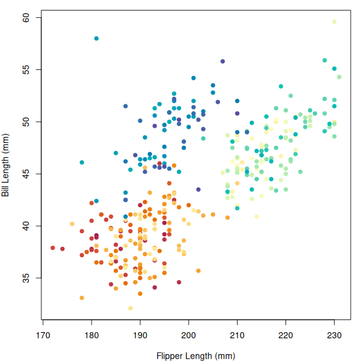
1 Penguin bill length vs flipper length.
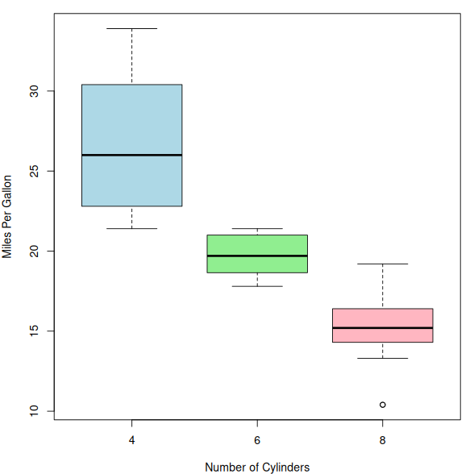
2 Miles per gallon by cylinder count.
3 A complex 3D surface defined by the function sin(r)/r.
3 Benchmarks
Now let’s optimize these plot files at different levels and measure the results:
#> scatterplot-1.png -> scatterplot_level_0.png | 52.8 KB -> 45.1 KB (-14.6%)
#> scatterplot-1.png -> scatterplot_level_1.png | 52.8 KB -> 43.7 KB (-17.2%)
#> scatterplot-1.png -> scatterplot_level_2.png | 52.8 KB -> 39.5 KB (-25.2%)
#> scatterplot-1.png -> scatterplot_level_3.png | 52.8 KB -> 39.5 KB (-25.2%)
#> scatterplot-1.png -> scatterplot_level_4.png | 52.8 KB -> 39.3 KB (-25.5%)
#> scatterplot-1.png -> scatterplot_level_5.png | 52.8 KB -> 39.3 KB (-25.5%)
#> scatterplot-1.png -> scatterplot_level_6.png | 52.8 KB -> 39.3 KB (-25.5%)
#> boxplot-1.png -> boxplot_level_0.png | 13.2 KB -> 12.2 KB (-7.5%)
#> boxplot-1.png -> boxplot_level_1.png | 13.2 KB -> 12.2 KB (-7.9%)
#> boxplot-1.png -> boxplot_level_2.png | 13.2 KB -> 11.9 KB (-10.2%)
#> boxplot-1.png -> boxplot_level_3.png | 13.2 KB -> 11.9 KB (-10.2%)
#> boxplot-1.png -> boxplot_level_4.png | 13.2 KB -> 11.3 KB (-14.2%)
#> boxplot-1.png -> boxplot_level_5.png | 13.2 KB -> 11.3 KB (-14.2%)
#> boxplot-1.png -> boxplot_level_6.png | 13.2 KB -> 11.3 KB (-14.2%)
#> persp-1.png -> persp_level_0.png | 172.7 KB -> 125.5 KB (-27.3%)
#> persp-1.png -> persp_level_1.png | 172.7 KB -> 114.3 KB (-33.8%)
#> persp-1.png -> persp_level_2.png | 172.7 KB -> 112.8 KB (-34.7%)
#> persp-1.png -> persp_level_3.png | 172.7 KB -> 112.8 KB (-34.7%)
#> persp-1.png -> persp_level_4.png | 172.7 KB -> 111.9 KB (-35.2%)
#> persp-1.png -> persp_level_5.png | 172.7 KB -> 111.9 KB (-35.2%)
#> persp-1.png -> persp_level_6.png | 172.7 KB -> 111.9 KB (-35.2%)
| Plot | Level | Size_KB | Reduction_pct | Time_sec |
|---|---|---|---|---|
| scatterplot | -1 | 52.770 | 0.000 | 0.000 |
| scatterplot | 0 | 45.083 | 14.566 | 0.019 |
| scatterplot | 1 | 43.688 | 17.211 | 0.065 |
| scatterplot | 2 | 39.479 | 25.185 | 0.193 |
| scatterplot | 3 | 39.479 | 25.185 | 0.663 |
| scatterplot | 4 | 39.296 | 25.533 | 1.432 |
| scatterplot | 5 | 39.296 | 25.533 | 2.523 |
| scatterplot | 6 | 39.296 | 25.533 | 3.058 |
| boxplot | -1 | 13.216 | 0.000 | 0.000 |
| boxplot | 0 | 12.225 | 7.500 | 0.016 |
| boxplot | 1 | 12.172 | 7.899 | 0.040 |
| boxplot | 2 | 11.864 | 10.227 | 0.100 |
| boxplot | 3 | 11.864 | 10.227 | 0.409 |
| boxplot | 4 | 11.346 | 14.151 | 0.857 |
| boxplot | 5 | 11.346 | 14.151 | 1.647 |
| boxplot | 6 | 11.346 | 14.151 | 2.082 |
| persp | -1 | 172.745 | 0.000 | 0.000 |
| persp | 0 | 125.522 | 27.337 | 0.020 |
| persp | 1 | 114.313 | 33.825 | 0.057 |
| persp | 2 | 112.781 | 34.712 | 0.169 |
| persp | 3 | 112.781 | 34.712 | 0.603 |
| persp | 4 | 111.905 | 35.219 | 1.294 |
| persp | 5 | 111.905 | 35.219 | 2.280 |
| persp | 6 | 111.905 | 35.219 | 2.729 |
Note: The optimization level of -1 represents the raw, unoptimized file (not a valid value for the level argument of tinypng()). This helps show the effect of level = 0 more clearly.
4 Lossy Optimization
#> scatterplot-1.png -> scatterplot_lossy_0.png | 52.8 KB -> 39.5 KB (-25.2%)
#> scatterplot-1.png -> scatterplot_lossy_1.png | 52.8 KB -> 19.1 KB (-63.9%)
#> scatterplot-1.png -> scatterplot_lossy_2_3.png | 52.8 KB -> 19.1 KB (-63.9%)
#> scatterplot-1.png -> scatterplot_lossy_6.png | 52.8 KB -> 19.1 KB (-63.9%)
#> scatterplot-1.png -> scatterplot_lossy_16.png | 52.8 KB -> 15.2 KB (-71.1%)
#> scatterplot-1.png -> scatterplot_lossy_32.png | 52.8 KB -> 11.1 KB (-79.0%)
#> scatterplot-1.png -> scatterplot_lossy_64.png | 52.8 KB -> 6.2 KB (-88.2%)
#> boxplot-1.png -> boxplot_lossy_0.png | 13.2 KB -> 11.9 KB (-10.2%)
#> boxplot-1.png -> boxplot_lossy_1.png | 13.2 KB -> 7.0 KB (-47.2%)
#> boxplot-1.png -> boxplot_lossy_2_3.png | 13.2 KB -> 7.0 KB (-47.2%)
#> boxplot-1.png -> boxplot_lossy_6.png | 13.2 KB -> 7.0 KB (-47.2%)
#> boxplot-1.png -> boxplot_lossy_16.png | 13.2 KB -> 5.1 KB (-61.6%)
#> boxplot-1.png -> boxplot_lossy_32.png | 13.2 KB -> 4.5 KB (-66.0%)
#> boxplot-1.png -> boxplot_lossy_64.png | 13.2 KB -> 1.9 KB (-85.6%)
#> persp-1.png -> persp_lossy_0.png | 172.7 KB -> 112.8 KB (-34.7%)
#> persp-1.png -> persp_lossy_1.png | 172.7 KB -> 54.9 KB (-68.2%)
#> persp-1.png -> persp_lossy_2_3.png | 172.7 KB -> 54.9 KB (-68.2%)
#> persp-1.png -> persp_lossy_6.png | 172.7 KB -> 49.4 KB (-71.4%)
#> persp-1.png -> persp_lossy_16.png | 172.7 KB -> 35.3 KB (-79.6%)
#> persp-1.png -> persp_lossy_32.png | 172.7 KB -> 29.5 KB (-82.9%)
#> persp-1.png -> persp_lossy_64.png | 172.7 KB -> 6.6 KB (-96.2%)
| Plot | Lossy | Size_KB | Reduction_pct | Time_sec |
|---|---|---|---|---|
| scatterplot | 0.0 | 39.479 | 25.185 | 0.192 |
| scatterplot | 1.0 | 19.061 | 63.880 | 0.560 |
| scatterplot | 2.3 | 19.061 | 63.880 | 0.560 |
| scatterplot | 6.0 | 19.061 | 63.880 | 0.560 |
| scatterplot | 16.0 | 15.228 | 71.143 | 1.268 |
| scatterplot | 32.0 | 11.081 | 79.001 | 1.169 |
| scatterplot | 64.0 | 6.250 | 88.156 | 0.880 |
| boxplot | 0.0 | 11.864 | 10.227 | 0.098 |
| boxplot | 1.0 | 6.976 | 47.218 | 0.500 |
| boxplot | 2.3 | 6.976 | 47.218 | 0.500 |
| boxplot | 6.0 | 6.976 | 47.218 | 0.500 |
| boxplot | 16.0 | 5.079 | 61.568 | 0.997 |
| boxplot | 32.0 | 4.491 | 66.016 | 0.886 |
| boxplot | 64.0 | 1.904 | 85.591 | 0.653 |
| persp | 0.0 | 112.781 | 34.712 | 0.169 |
| persp | 1.0 | 54.936 | 68.198 | 0.578 |
| persp | 2.3 | 54.936 | 68.198 | 0.578 |
| persp | 6.0 | 49.410 | 71.397 | 1.190 |
| persp | 16.0 | 35.275 | 79.580 | 1.046 |
| persp | 32.0 | 29.479 | 82.935 | 0.903 |
| persp | 64.0 | 6.574 | 96.194 | 0.687 |
A visual comparison of the lossy optimization results:
-
scatterplot-
lossy = 0Reduction: 25.19%
-
lossy = 1Reduction: 63.88%

-
lossy = 2.3Reduction: 63.88%
-
lossy = 6Reduction: 63.88%

-
lossy = 16Reduction: 71.14%
-
lossy = 32Reduction: 79.00%
-
lossy = 64Reduction: 88.16%
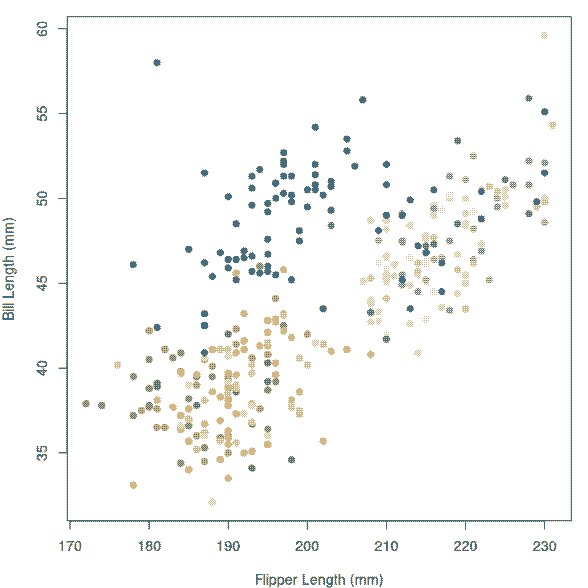
-
-
boxplot-
lossy = 0Reduction: 10.23%
-
lossy = 1Reduction: 47.22%

-
lossy = 2.3Reduction: 47.22%

-
lossy = 6Reduction: 47.22%
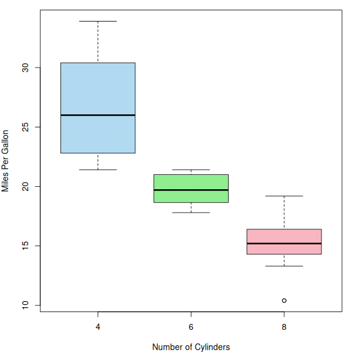
-
lossy = 16Reduction: 61.57%
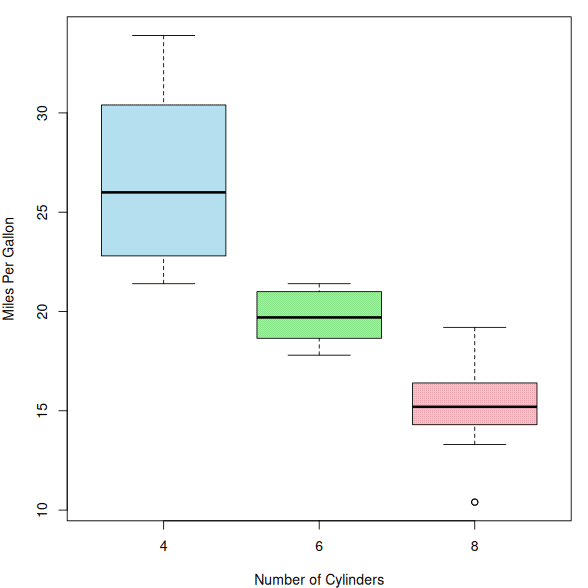
-
lossy = 32Reduction: 66.02%
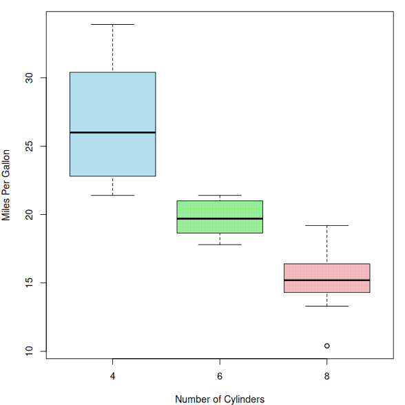
-
lossy = 64Reduction: 85.59%
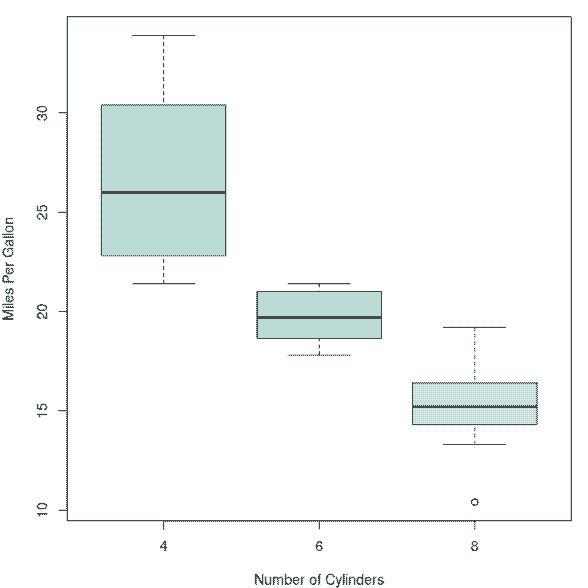
-
-
persp-
lossy = 0Reduction: 34.71%
-
lossy = 1Reduction: 68.20%

-
lossy = 2.3Reduction: 68.20%
-
lossy = 6Reduction: 71.40%
-
lossy = 16Reduction: 79.58%
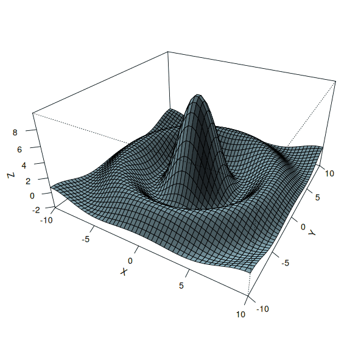
-
lossy = 32Reduction: 82.93%
-
lossy = 64Reduction: 96.19%
-
5 Visualization
Note that for the lossy optimization benchmarks, we first did the lossy optimization and then applied the default level of lossless optimization on top of it. The outcome is the combination of both optimizations.
The dashed vertical line in the lossy optimization plots indicates the JND (just noticeable difference) threshold of 2.3.
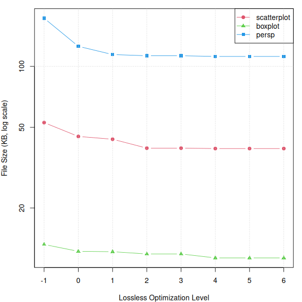
4 File size vs optimization level (log scale).
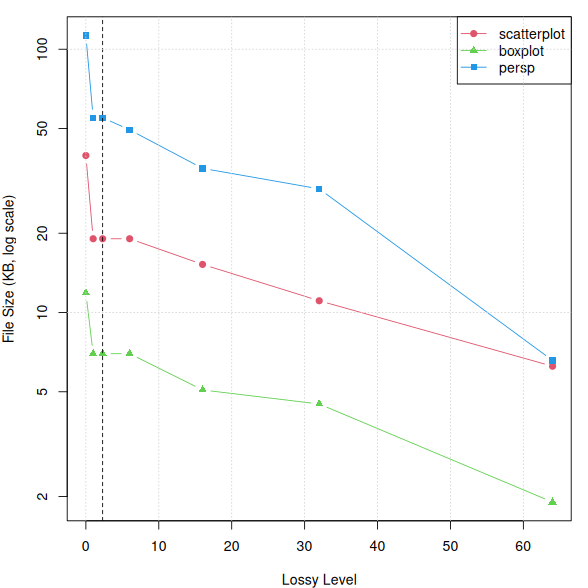
5 File size vs lossy level.
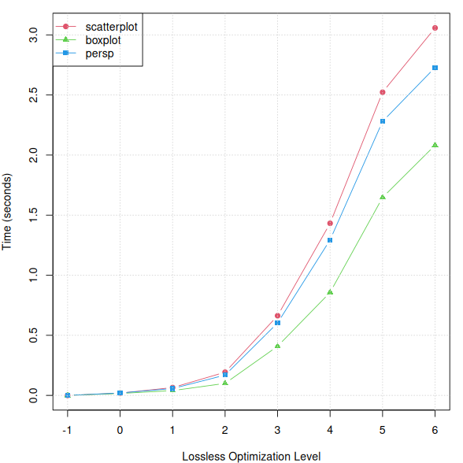
6 Processing time vs optimization level.
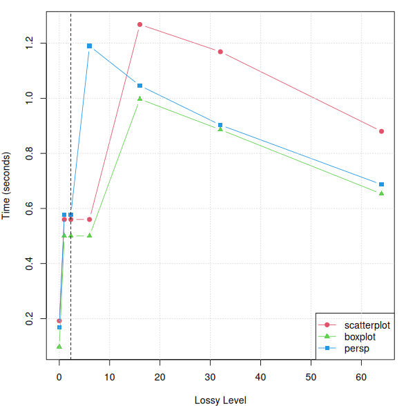
7 Processing time vs lossy level.
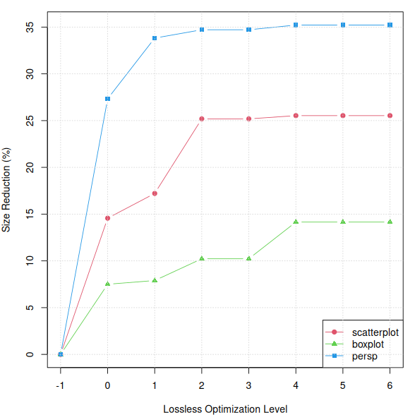
8 Size reduction percentage by optimization level.
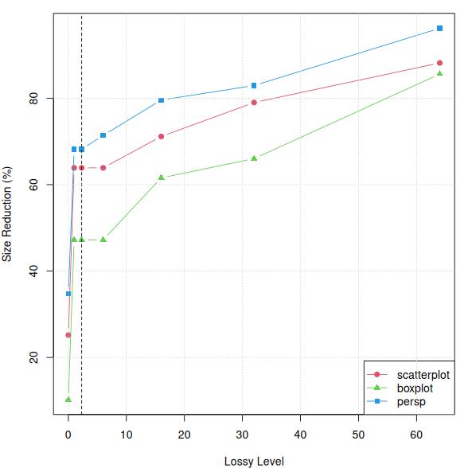
9 Size reduction percentage by lossy level.
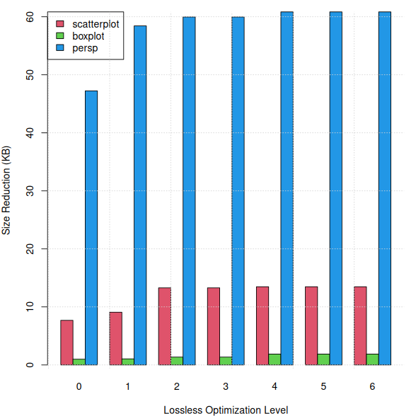
10 Absolute size reduction by optimization level.
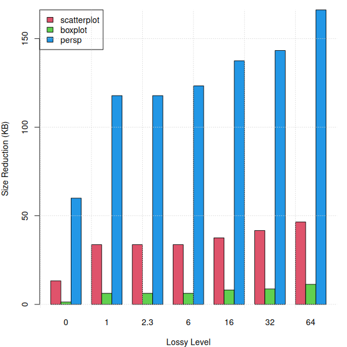
11 Absolute size reduction by lossy level.